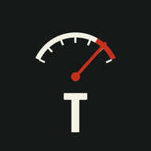

Free practice for the US amateur radio license exams, using the official question pools. Pick your exam, then add it to your home screen: it works with no signal, and your progress stays on your phone.

Element 2 · 2026–2030 pool · 409 questions · 35 on the exam, 26 to pass
Questions from the NCVEC question pools (public domain). No sign-up, no tracking: nothing you do here leaves your device.